PAUL STANLEY
THE STAR CHILDVocalista y guitarrista rítmico. Su personaje escénico representa una estrella brillante.
I Was Made for Lovin' You
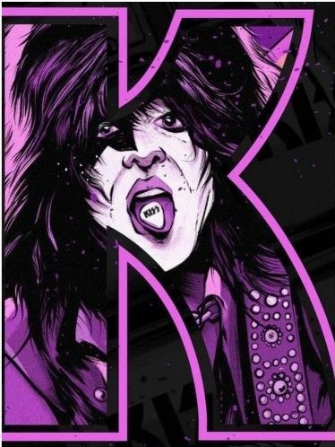
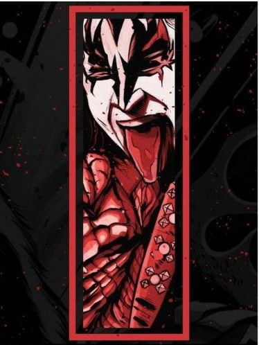
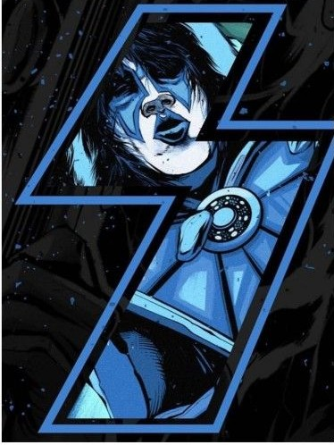
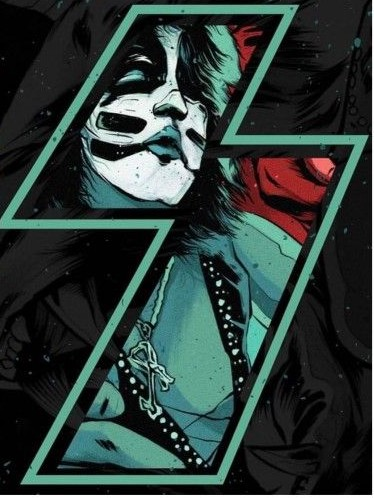
Sube el volumen. Enciende el escenario.
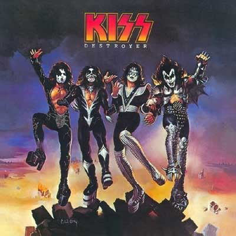
Elige las fotos de los integrantes y tócalas para descubrir su instrumento.
Vocalista y guitarrista rítmico. Su personaje escénico representa una estrella brillante.
Bajista y vocalista. Su personaje se reconoce por el maquillaje demoníaco y la lengua larga.
Guitarrista solista original. Su personaje espacial y sus solos marcaron el sonido clásico de KISS.
Baterista y vocalista original. Su personaje felino completa el cuarteto clásico.
Las luces cobran vida cuando empieza la música.
Desliza para recorrer las portadas que compartiste.
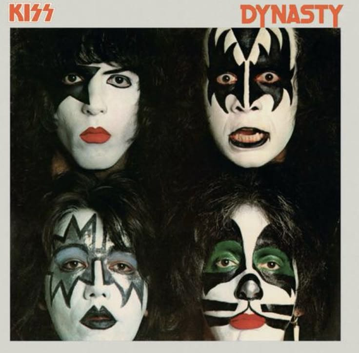
Sonido disco-rock y el éxito “I Was Made for Lovin’ You”.
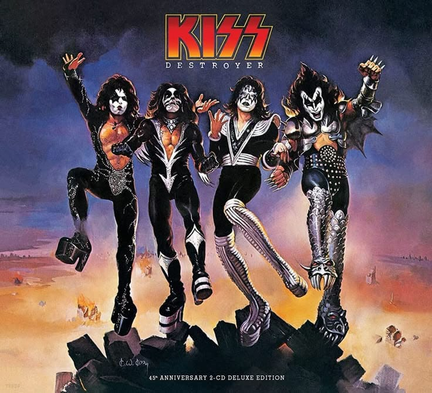
Rock épico, grandes coros y una portada inolvidable.
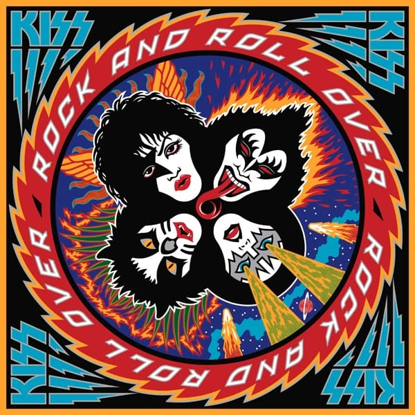
Una explosión de color con el rock directo de KISS.
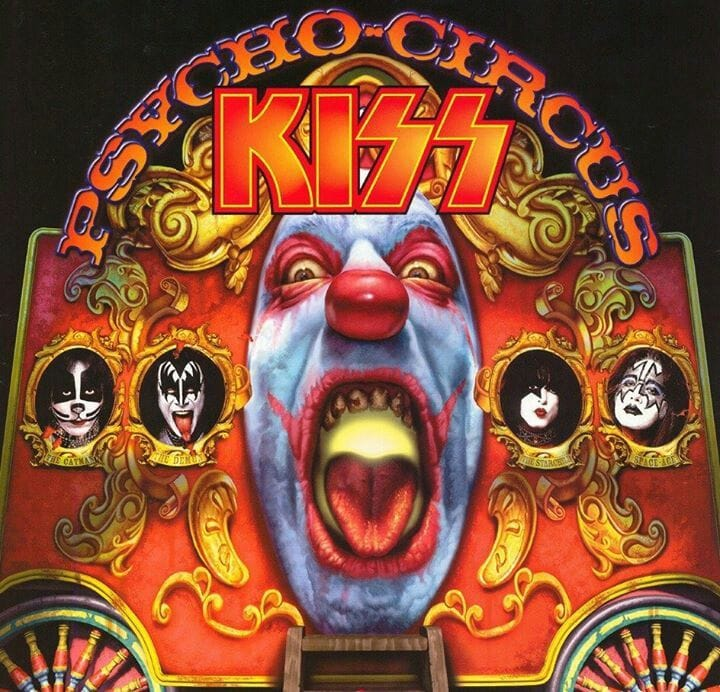
Un universo de circo oscuro, misterio y hard rock.
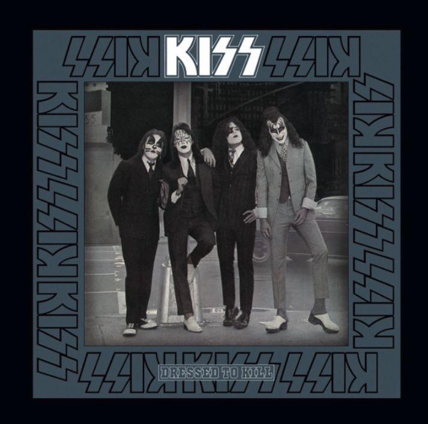
El traje clásico y el himno “Rock and Roll All Nite”.
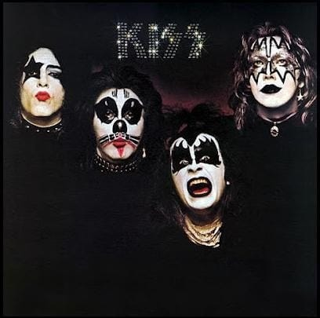
El debut que presentó al cuarteto y su sonido crudo.
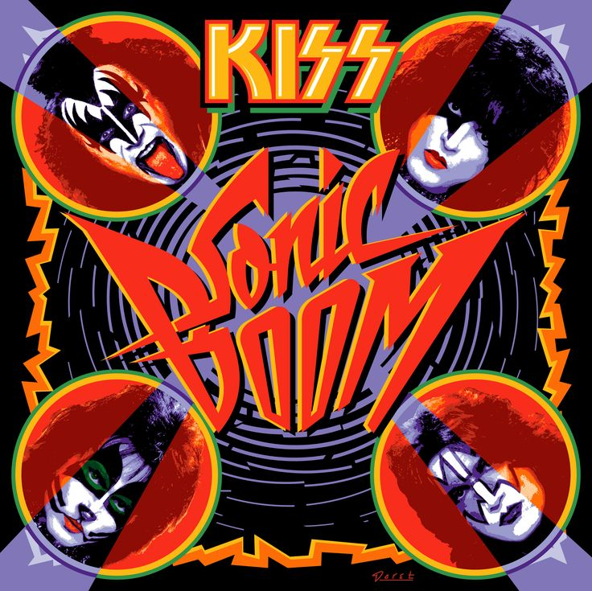
Una portada explosiva para una descarga de rock moderno.
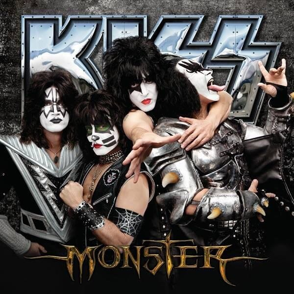
El grupo reunido en una imagen de metal y guitarras.
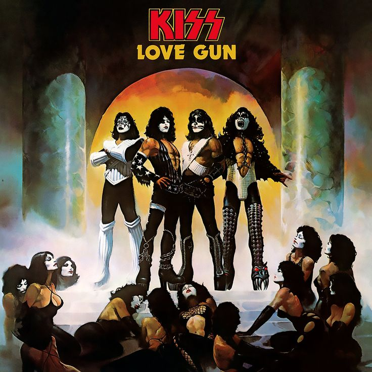
Una portada teatral para uno de sus clásicos de estudio.
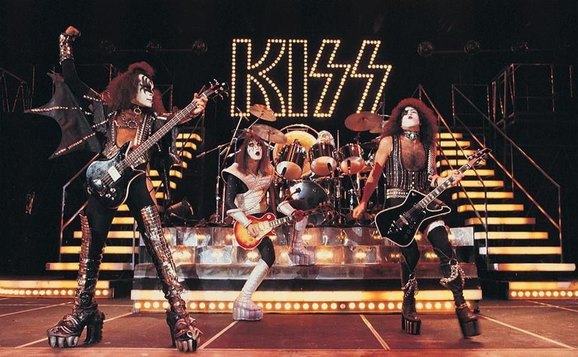
La fuerza del escenario y uno de los himnos más potentes de KISS, juntos en esta sección.
CANCIÓN INCLUIDA · DISPONIBLE SIN CONEXIÓNElige el archivo de la película que guardaste en tu dispositivo. Se reproduce aquí y no se sube a internet.
Todavía no has elegido un video.
0 canciones
Carga canciones para comenzar.